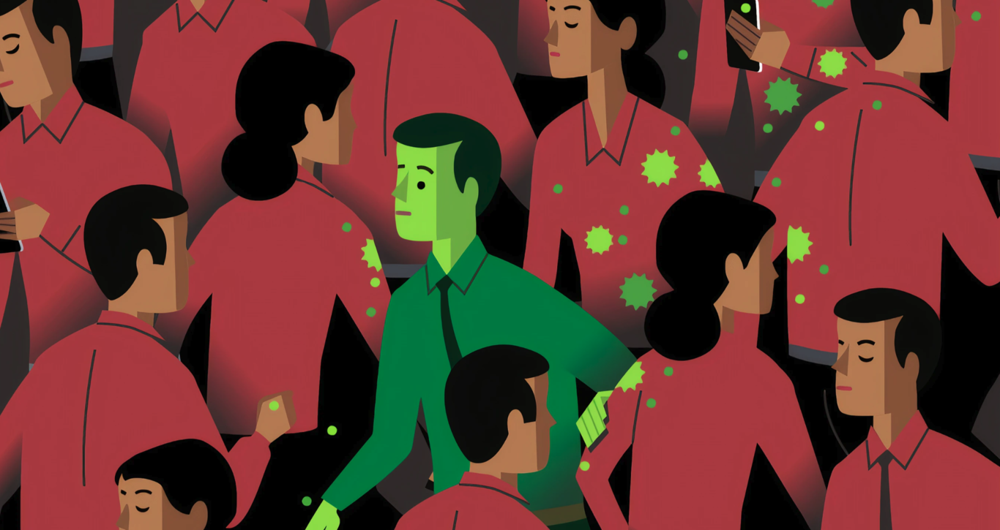

La suspensión del ensayo de la vacuna de Johnson & Johnson es una anécdota: no entender qué significa "encontrar la vacuna" sí es un problema
Ha vuelto ocurrir. La farmacéutica Johnson & Johnson ha anunciado que se ha visto obligada a detener los ensayos de su vacuna contra la COVID-19 por la aparición de una "enfermedad inexplicable" en uno de los participantes del estudio. No han trascendido muchos más detalles, porque la empresa se ha negado a suministrar más datos para "respetar la privacidad" del participante enfermo.
Como explicamos cuando se detuvieron los ensayos de la vacuna de Oxford, es algo habitual en la Fase III del ensayo. Es más, es que la Fase III está pensada para que este tipo de problemas emerjan cuanto antes. No tiene sentido hacer un drama informativo en cada suspensión.
Sobre todo, porque la probabilidad de que se retomen los ensayos es muy alta. Al fin y al cabo, y este como veremos es el verdadero drama, estos ensayos están diseñados por compañías especializadas en estas lindes: es decir, están específicamente diseñados para superar las pruebas de seguridad y no es sorprendente que sacrifiquen su efectividad en aras de conseguir el 'OK' de las autoridades. Y este, en todo caso, es el verdadero drama. Un aviso claro de que quizás tenemos más que preocuparnos de la poca efectividad futura de las vacunas que de los problemas secundarios que traigan.
Buscar "una vacuna" no es buscar "la vacuna"
El caso más ilustrativo para acercarnos a esto quizás sea el de Joan Pons, el voluntario español que participa en la fase III de la vacuna de Oxford y que, hace unos días, dio positivo en COVID-19. Se trata de un enfermero español que, desde hace años vive en Reino Unido y se ofreció como voluntario para participar en los ensayos.
Pons, confesaba a la Cadena SER, se "había llevado un susto de muerte" y, sin embargo, su positivo no es más que la consecuencia lógica de un procedimiento diseñado no para encontrar una vacuna definitiva contra el virus, sino para ganar tiempo.
Desde el principio de la pandemia, los expertos han combatido el llamado "optimismo vacunológico", la idea que íbamos a tener una vacuna "pronto". Efectivamente el horizonte de 'meses' era más propio de un escritor de ciencia ficción que de una persona que hubiera reflexionado críticamente sobre lo que conlleva el desarrollo de una vacuna en el mundo real.
Pero es que el horizonte de "uno o dos años" se sostenía sobre una base fundamental: el de unas vacunas que, aunque no evitaran los contagios, entrenaran a nuestro sistema inmune para conseguir que la enfermedad fuera, en el mejor de los casos, más benigna. En ese sentido, las vacunas nos ayudan a ganar tiempo, a contener los brotes, aplanar la curva: no solucionarán el problema a corto plazo.
se da una enorme paradoja: necesitamos las vacunas si queremos avanzar en el control de la pandemia, pero tenemos que tener claro que esas vacunas no son más que una pieza de una estrategia mucho más amplia. Es esa perspectiva general (la que marca distancias con las soluciones mágicas) donde la brutal sucesión de noticias, investigaciones y promesas que nos asalta diariamente encajan permitiendo mantener en el mismo plano el realismo y la esperanza.